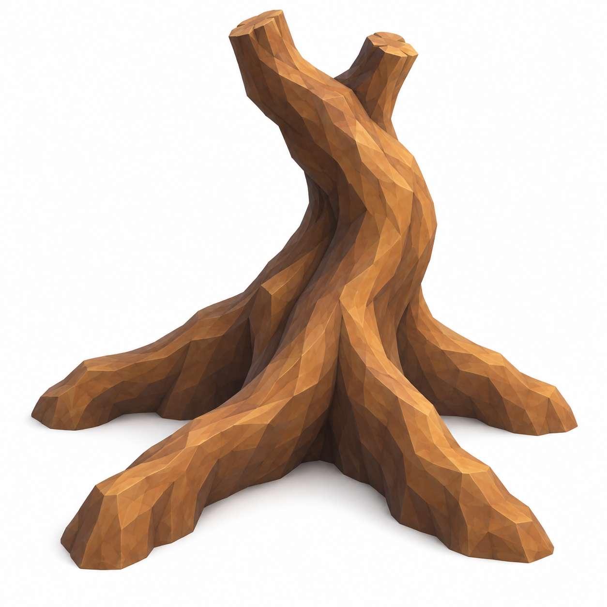
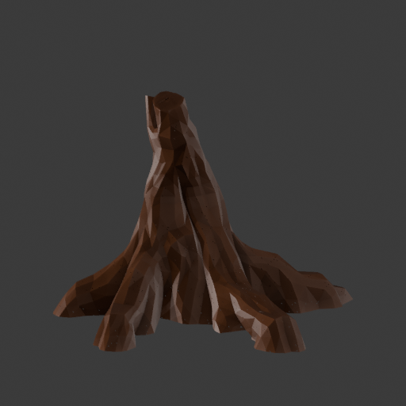
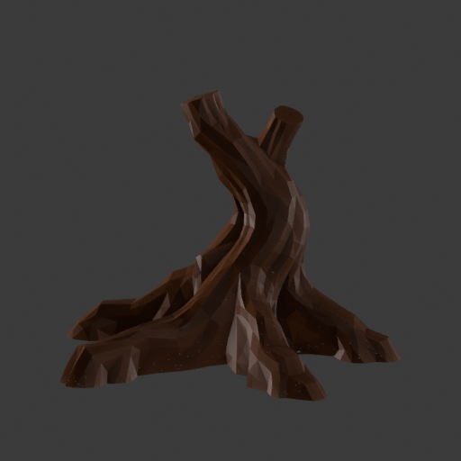

Back to Rootbound dossier
A real root model to work from
Actual Blender renders · source preparation · not gameplay screenshots
The reviewed single-image TRELLIS run produced a detailed geometry master. The separate Blender derivative uses one controlled reduction and uniform scale: five metres of root spread and about 3.9 metres of height. No roots were cut or reshaped. All original source geometry is preserved.
Retain both source and derivative. Art/runtime admission remains HOLD: strengthen the four broad buttresses and asymmetric bent fork. Raw geometric fit was 7.2/10; reduction preserved the useful form but did not resolve those structural differences.
The brown clay is an inspection aid, not a recovered TRELLIS texture or final game material. Matching cameras show raw and derivative at 512, 96 and 48 pixels. These views use an object inspection camera, not the mobile gameplay camera.
Selected design reference

Generated direction; not implementation proofFront
Raw master — 1,029,792 trianglesBlender derivative — 154,468 triangles Three-Quarter
Raw master — 1,029,792 trianglesBlender derivative — 154,468 triangles Side
Raw master — 1,029,792 triangles
Blender derivative — 154,468 triangles Rear
Raw master — 1,029,792 triangles
Blender derivative — 154,468 triangles